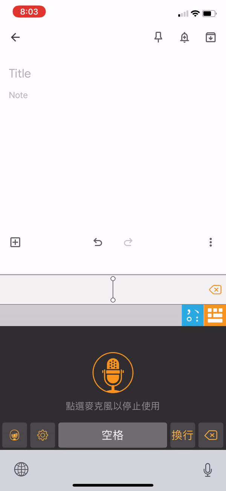
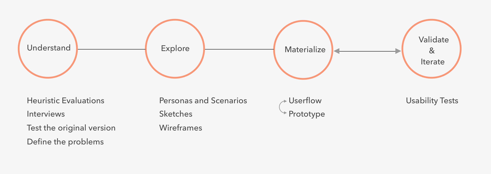
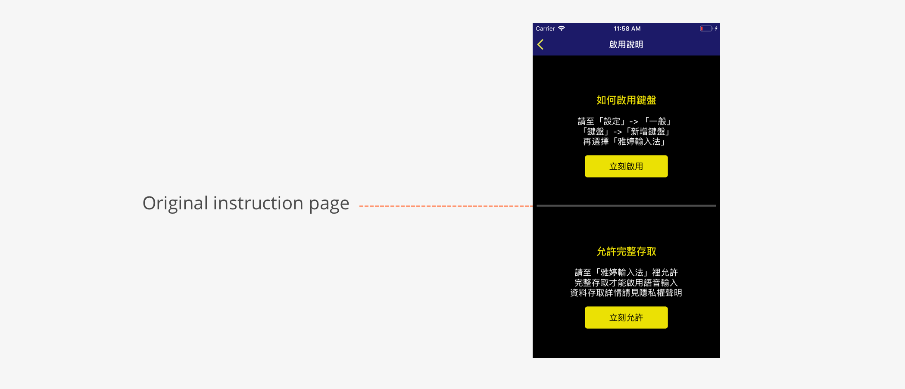
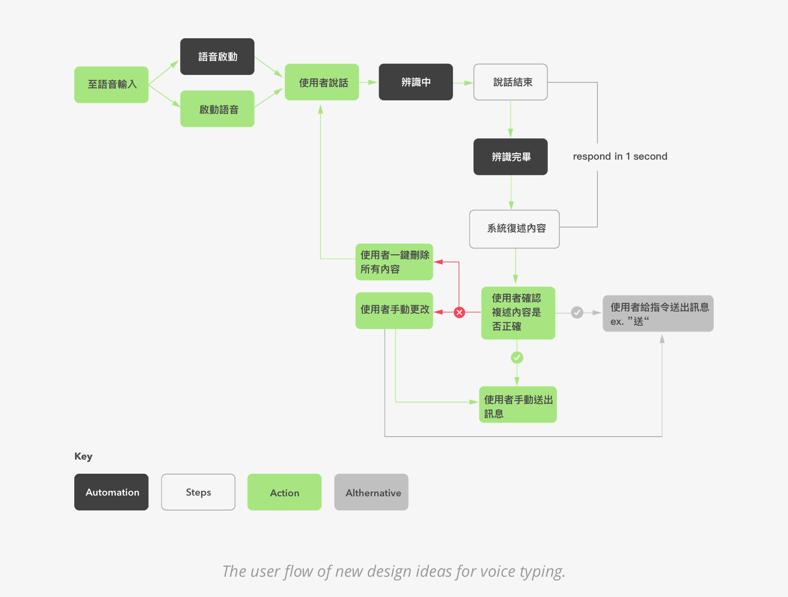
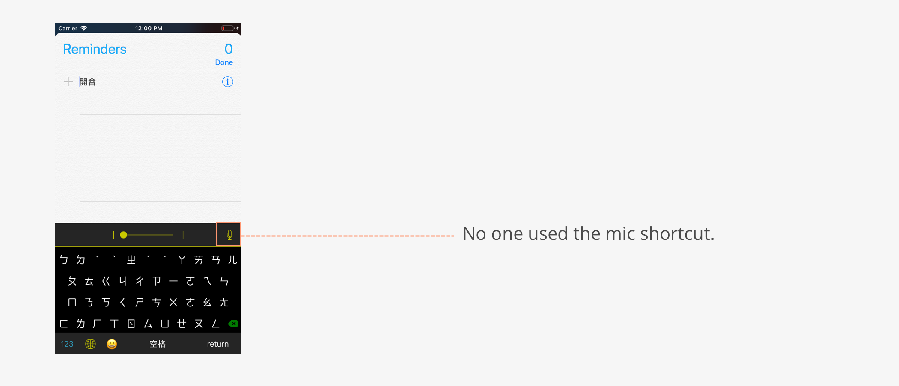
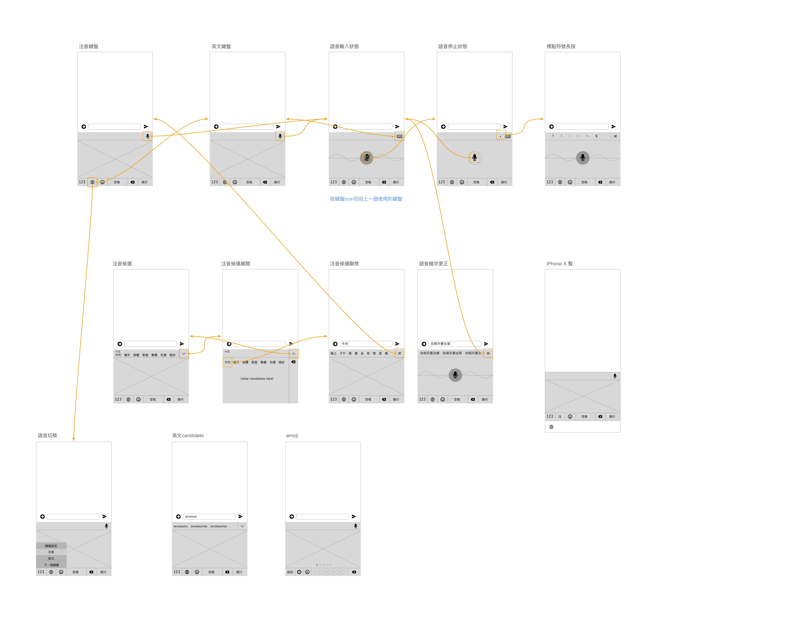
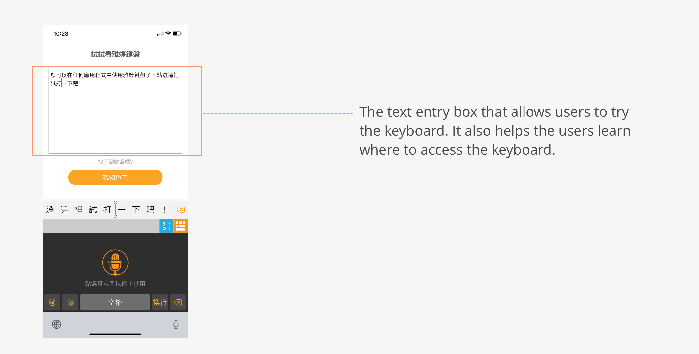
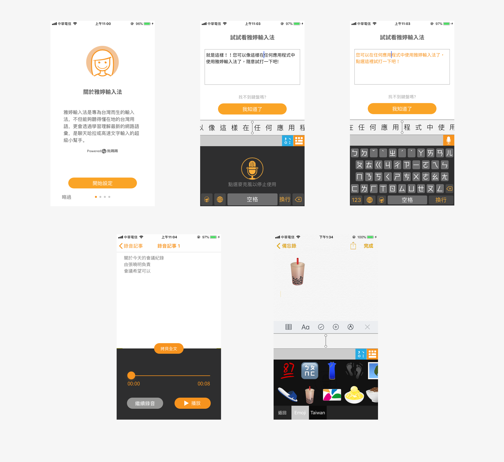
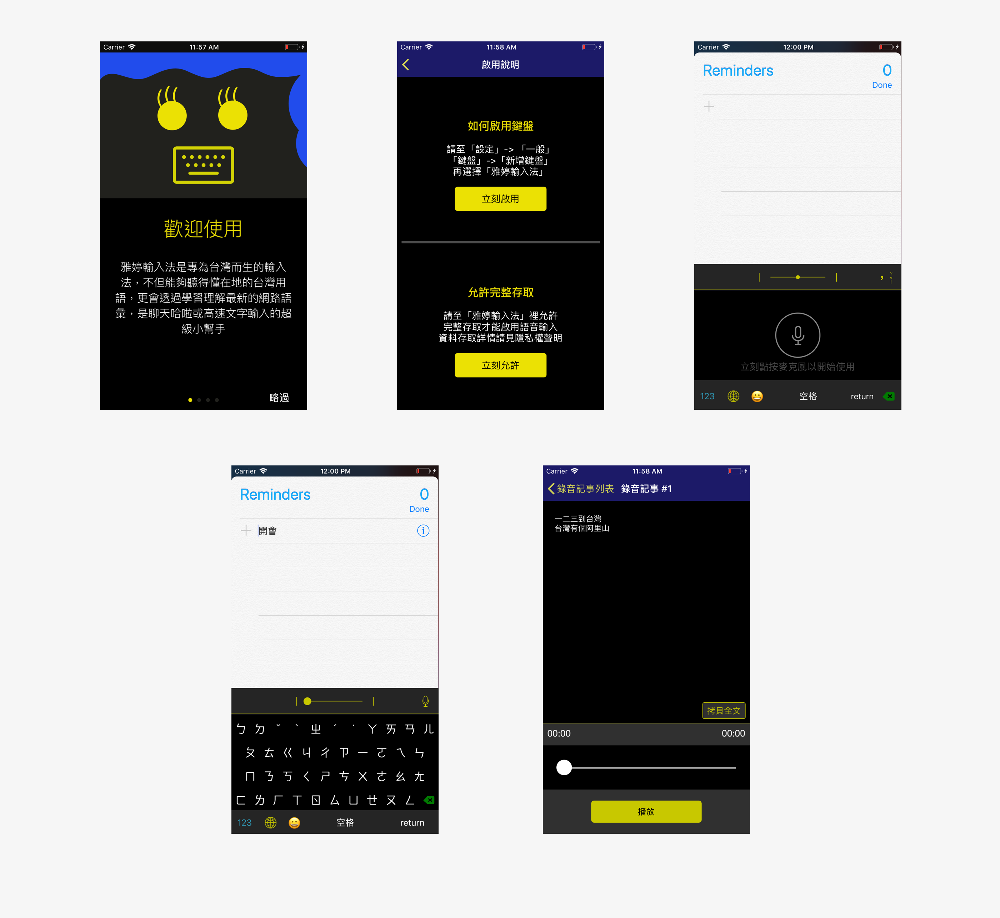

Objective
Improve YaTing keyboard’s functions discoverability, consistency, and usability.
When I joined the team, Yating keyboard was available in IOS App Store. While there were some technical challenges, the company wished the overall user experience design could be improved as well. Thus, I took on the responsibility to investigate the issues and propose new design.
Final Design Overview
Below is a video of me introfucing the basic functions of the new version of YaTing Keyboard.
*The visual design was done by the visual designer on the team.*

1. User Onboarding
A motion-based installing instructions help users visualize the process and find the corressponded buttons with ease.
- 
2. Shortcuts for quick switch between keyboards
Quick shortcuts that allow users to quickly switch between voice-typing keyboard and Chinese/English keyboards. A punctuation shorcut is also provided in voice-typing keyboard.
Design Process at a Glance
- 
Research
| Heuristics Evaluation
Since I have never used the app before, I started off by becoming a new user myself and getting familiar with the original design. As I went through the entire process which included downloading, on-boarding, discovering, and learning, I took notes about what were confusing and where I paused. From the notes, I drafted a list of usability problems with heuristic violations and rated each of them based on severity. The problems include both design and technical ones, here I present key findings regarding experience design.
1. Users cannot switch to a different language within YaTing keyboard. Thus, they have to shuffle through other keyboards until they come back to YaTing.
2. Slider on the top of the keyboard is confusing. No hint or help is provided.

3. The process of enabling the keyboard was a little confusing because there was a lack of visual cue and the instructions relied heavily on recall rather than recognition.
- 
| Needs Finding
After the evaluation, I had multiple casual talks with people in different age groups in order to better understand what the users need and want. I found two criteria that have been frequently brought up.
For people at their 20s-30s
Quickly change between Chinese and English keyboard.
" I change between Chinese and English keyboard a lot and it would be so much easier to change with one tap."
For people at their 40s-60s
Have more demands for voice typing. Expect something hands-free.
" My eyesight is getting worse so I start using voice-typing more often."
| Interesting Findings & Experiment
For voice typing specifically, I found two interesting aspects that have been mentioned multiple times.
1. Even with voice typing, people still need to check whether the spelling is right. It can be a little distracting when they are multitasking. Thus, sometimes voice typing doesn’t make things easier.
2. Going along with the first bulleted point, when there’s an error, it is more difficult to correct because people either need to move the cursor to where the mistakes are or deleting everything backwards up until they hit the mistakes.
Therefore, I decided to experiment two new designs and see if they will possibly work. First, a Text to Speech function that reads the texts that have been entered by voice, right after the users are done with their input. Second, a delete all button that quickly deletes the last sentence entirely.
- 
In order to validate these ideas, I explained to the engineer about how these two design will work. The engineer was able to prototype the design for me to test with potential users.
| Interviews and Initial Usability Tests
To understand users’ thoughts and needs, I conducted 8 short interviews followed by a usability test using the original version of the app. In the usability tests, I designed 4 tasks that asked participants to perform essential functions. Three main goals for the interviews and tests are to observe users’ behavior, validate heuristic validations that was done earlier, and test new design ideas for voice typing.
For the test result, unfortunately, the new design ideas did not work out. However, some other problems have been identified.
| Problems Identification
From the interviews and usability tests, two main problems emerged.
1. Users don’t use the “microphone button” shortcut to switch to voice typing.
" Wait I didn’t even notice there was a shortcut."
When users were asked to switch from Chinese keyboard to voice typing, no one used the shortcut mic icon on the upper right corner because they didn’t even notice it. Thus, they had to keep pressing the earth icon to circle through all the keyboards to get to voice typing. From my observation, there are two reasons that caused the problem:
a. The icon is not prominent.
b. Since the first thing that the users ever see in the app is the voice typing screen, and the only way they can switch from voice to Chinese/English keyboard is to click the earth icon. Thus, it created a mental model that they can only use the earth icon to switch typing methods.
- 
2. The process of enabling and discovering the keyboard is challenging.
" I think I’m done setting up, but now I don’t know what to do. Where do I find the keyboard?"
For people who have never installed and enabled a new mobile keyboard, this process can be complicated. Some participants didn’t add the keyboard correctly, some didn’t activate microphone.
Explore
| Sketches
With the key problems in mind, I started to explore and sketch new design and user flow. Below are some of the examples.


| Wireframes
I finalized the new flow and elements arrangement of the keyboard and made wireframes with user navigation flow.
- 
Materialize
| Prototype
To test the new flow, I made a prototype with cardboard paper and sticky notes.

Validate and Iterate
| More Usability Tests!
I tested the prototype with the internal team and a couple of potential users, the overall navigation was fine; however, the on-boarding process still needs some thoughts because it is still a challenge to let some users know how to find the keyboard.
| Refine
After discussing with the team, we decided to add a text entry box on the confirmation page of keyboard installation. Users will be shown how to access YaTing keyboard from the earth icon and they can try entering some texts in that text entry box if they wish. This way, it avoids the situation when users don't know what to do after installation.
- 
Final Design
Below are the major screens of the new design.
- 
For reference, below is the original design.
- 
What I learned
| Let Data Talk.
It was a valuable experience working with engineers and visual designer. I learned the importance of utilizing the data and result from the interviews to explain design rationale to the engineer.
| Don't be afraid of failing early.
From this experience, I was glad that we tested new concepts early in the process. Failing early rather than later gave me an idea of what users really need and want. Most importantly, identifying what doesn’t work early would also save lots of manpower and time later on in the process.